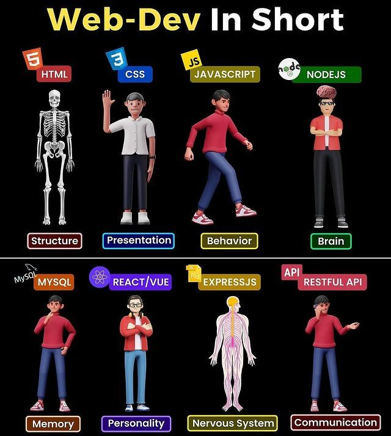

เหตุผลที่อยากเรียน Full stack web development เพราะทำให้เราเพิ่มทักษะได้ จากเดิมเราอาจจะเก่งแค่ Front End หรือ Backend
การที่เรามีทักษะ Full stack web development มาเพิ่มมันสามารถเพิ่มฐานเงินเดือนให้เราได้เป็นเท่าตัว
ความคาดหวังต่อวิชานี้ คาดหวังว่าเราจะตั้งใจเก็บเกี่ยว ความรู้และเทคนิคต่างๆที่อาจารย์สอน นำมาใช้ให้ได้มาก
ที่สุดสามารถนำความรู้เทคนิคต่างๆไปต่อยอด นำไปใช้ได้จริง เพื่ออนาคตที่ดีและความเป็นอยู่ที่ดีในอนาคต
จุดอ่อน เป็นคนที่ช้า ไม่มีระเบียบวินัย หลงลืมง่ายในเรื่องการจำ Code
แนวทางการพัฒนาคือ หมั่นฝึกฝน ฝึกทำบ่อยๆให้เกิดการคุ้นชิน และพัฒนาสิ่งใหม่ๆอยู่เสมอ
BorntoDev
รูปภาพที่สนใจ
